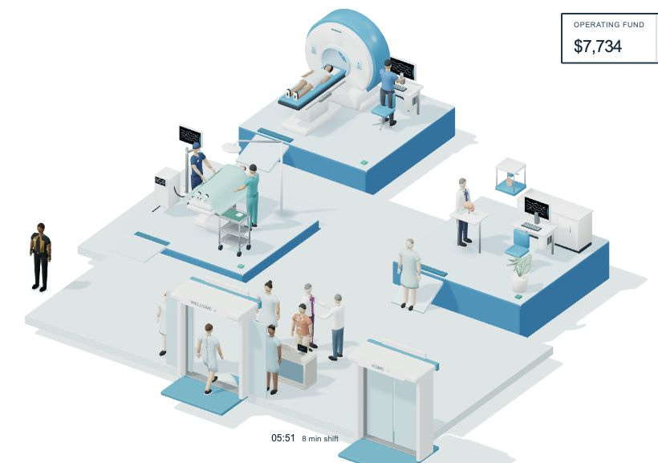

Reference panel retained from earlier supplied comparison; current scene is the advanced compact scenario, game second129.
Faces, cloth, hand contact, material richness, shadow softness and composition remain below the reference. No parity claim.